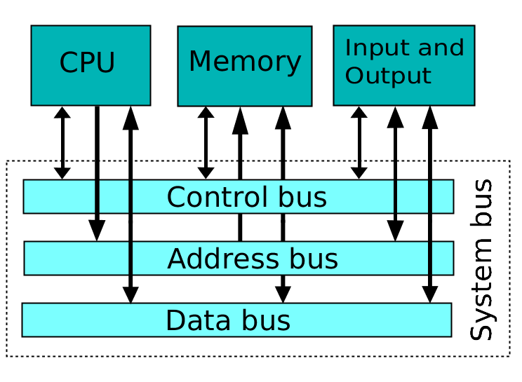
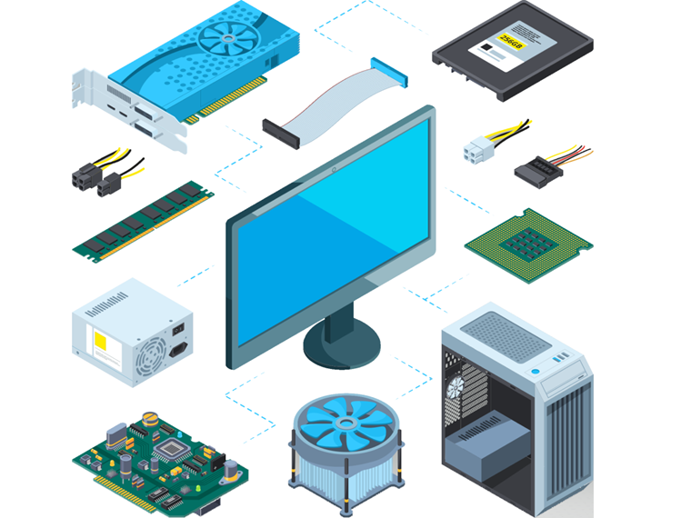

Capitolo 2 - Le Componenti del Computer
Indice
- Hardware
- Software
- Input e Output
Hardware
- Input e Output
Hardware
L’hardware è tutto ciò che può essere toccato. La parola hardware è costituita da hard = duro/resistente e ware = materiale.
L’hardware è composto da periferiche di input, output e componenti interni al case.
CPU
La CPU è la parte che rende intelligente il computer, serve a fare calcoli e operazioni logiche.
Per fare funzionare la CPU servono la ALU (Arithmetic Logic Unit) e la CU (Control Unit).
La ALU è incaricata di svolgere le operazioni logiche che permettono di trasformare i dati in arrivo dalle periferiche di input, mentre la CU deve controllare e coordinare le azioni necessarie per l'esecuzione delle operazioni.

Scheda madre
La scheda madre è la scheda principale che collega tutti i componenti del computer. Permette lo scambio di informazioni tra CPU, RAM, disco fisso (hard disk) e altri componenti.
Scheda grafica
La scheda grafica è fondamentale per tutti i computer. È responsabile dell'accelerazione grafica 3D e, grazie ai driver video, permette di trasformare i segnali elettrici inviati dal processore in segnali video poi visualizzati dalla periferica d'output.
Scheda di rete (Ethernet)
La scheda di rete permette ai computer di connettersi con un cavo LAN alla connessione Internet.
Esempi:
- Input: tastiera, mouse, webcam, ecc.
- Output: stampante, casse, monitor, ecc.
- Componenti dentro al case: scheda madre, RAM, hard disk, ecc.

Software
La parola software è costituita da soft = morbido e ware = materiale.
Il software è la parte logica del computer costituita dai vari programmi.
BIOS
Il BIOS è un software che si trova nella scheda madre. Una volta acceso il computer, il BIOS si attiva per avviare il sistema operativo.
Applicazioni
Il software applicativo (o applicazione) è un programma che consente di risolvere una o più esigenze specifiche da parte dell’utente finale. Sono sviluppati per essere eseguiti su piattaforme specifiche, grazie alla presenza di un sistema operativo.
Sistemi Operativi
Un sistema operativo è un insieme di software che fornisce all'utente una serie di comandi e servizi, per usufruire al meglio della potenza di calcolo di qualsiasi elaboratore elettronico.
Esempi:
- Windows
- iOS
- Android
- UNIX
Differenza tra input e output
Gli input sono i dati che il programma riceve in ingresso e gli output sono i dati che il programma spedisce in uscita.
Le periferiche sono un insieme di apparati molto eterogeneo per costo, funzionalità, modalità di interazione con il computer e con l'utente.